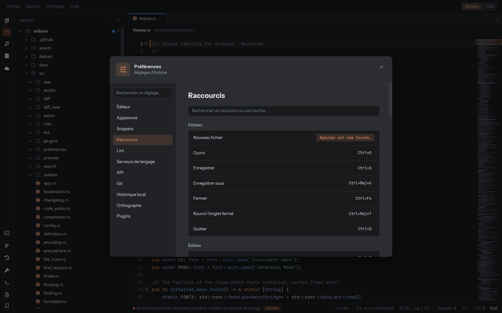
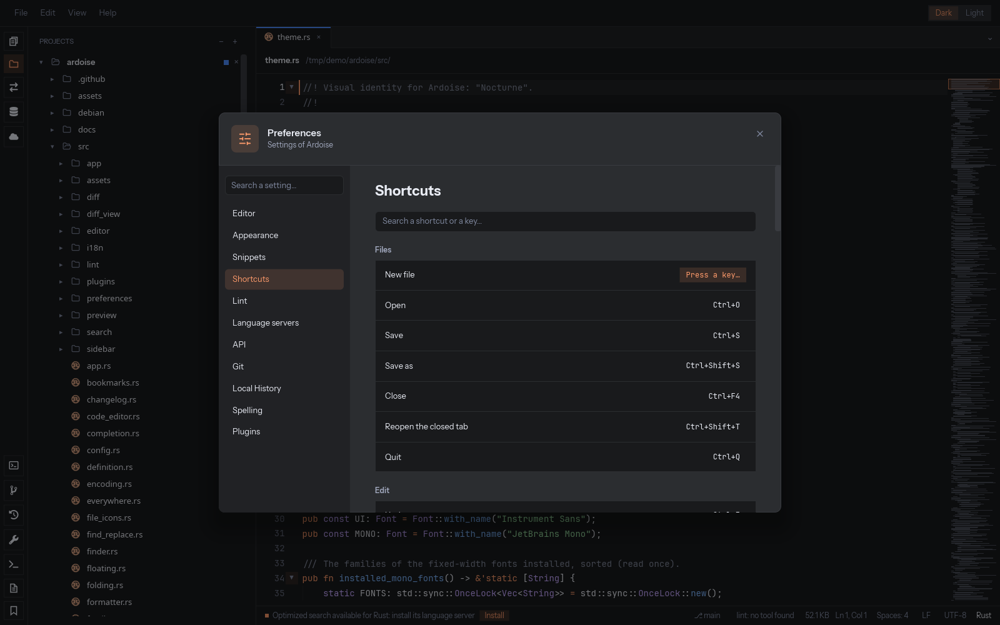

Raccourcis clavierKeyboard shortcuts
Tous les raccourcis par défaut, et comment les changer.Every default shortcut, and how to change them.
Changer un raccourciChanging a shortcut
Aide › Configurer les raccourcis… ou Préférences › Raccourcis : cliquez sur un raccourci (« Cliquer pour redéfinir »), appuyez sur la nouvelle combinaison. Une recherche trouve une action par son libellé ou par ses touches. Deux actions ne peuvent pas partager la même combinaison. Les touches affichées suivent votre système : sur macOS, Ctrl devient ⌘ et Alt devient ⌥.
Help › Configure shortcuts… or Preferences › Shortcuts: click a shortcut (“Click to rebind”), press the new combination. A search finds an action by its label or its keys. Two actions cannot share the same combination. Keys follow your system: on macOS, Ctrl becomes ⌘ and Alt becomes ⌥.


Préférences › Raccourcis avec un raccourci en cours de réassignation (« Appuyez sur une touche… »).Preferences › Shortcuts with a shortcut being rebound (“Press a key…”).
Capture à venirScreenshot to comeFichiersFiles
| ActionAction | RaccourciShortcut |
|---|---|
| Nouveau fichierNew file | Ctrl + N |
| OuvrirOpen | Ctrl + O |
| EnregistrerSave | Ctrl + S |
| Enregistrer sousSave as | Ctrl + Shift + S |
| Fermer l'ongletClose tab | Ctrl + F4 |
| Rouvrir l'onglet ferméReopen the closed tab | Ctrl + Shift + T |
| QuitterQuit | Ctrl + Q |
ÉditionEdit
| ActionAction | RaccourciShortcut |
|---|---|
| AnnulerUndo | Ctrl + Z |
| RétablirRedo | Ctrl + Shift + Z |
| Tout sélectionnerSelect all | Ctrl + A |
| Dupliquer la ligneDuplicate line | Ctrl + D |
| Supprimer la ligneDelete line | Ctrl + Y |
| Déplacer la ligne ↑ / ↓Move line ↑ / ↓ | Alt + Shift + ↑ / ↓ |
| Commenter / décommenterToggle comment | Ctrl + / |
| Rechercher / remplacerFind / Replace | Ctrl + F |
Plusieurs curseursMultiple cursors
| ActionAction | RaccourciShortcut |
|---|---|
| Ajouter l'occurrence suivanteAdd next occurrence | Alt + J |
| Toutes les occurrencesSelect all occurrences | Ctrl + Alt + Shift + J |
| Curseur au-dessusCursor above | Ctrl + Alt + ↑ |
| Curseur en dessousCursor below | Ctrl + Alt + ↓ |
CodeCode
| ActionAction | RaccourciShortcut |
|---|---|
| Formater le codeFormat code | Ctrl + Alt + L |
| Compléter le codeComplete the code | Ctrl + Space |
| Infos sur les paramètresParameter info | Ctrl + P |
| Renommer le symboleRename symbol | Shift + F6 |
| Plier / déplierFold / unfold | Ctrl + . |
| Lancer une tâcheRun a task | Ctrl + Alt + R |
| Suggestions orthographiquesSpelling suggestions | Ctrl + Alt + S |
Recherche et navigationSearch and navigation
| ActionAction | RaccourciShortcut |
|---|---|
| Palette d'actionsAction palette | Ctrl + Shift + A |
| Aller au fichierGo to file | Ctrl + Shift + N |
| Aller à la classeGo to class | Ctrl + Alt + N |
| Aller au symboleGo to symbol | Ctrl + Alt + Shift + N |
| Aller à la ligneGo to line | Ctrl + G |
| Chercher dans les fichiersFind in files | Ctrl + Shift + F |
| Remplacer dans les fichiersReplace in files | Ctrl + Shift + R |
| Précédent / SuivantBack / Forward | Alt + ← / → |
Marque-pagesBookmarks
| ActionAction | RaccourciShortcut |
|---|---|
| Poser / retirerToggle | F11 |
| SuivantNext | F2 |
| PrécédentPrevious | Shift + F2 |
| Panneau des marque-pagesBookmarks panel | Shift + F11 |
Affichage et pluginsView and plugins
| ActionAction | RaccourciShortcut |
|---|---|
| Barre latéraleSidebar | Ctrl + B |
| TerminalTerminal | Alt + F12 |
| Panneau GitGit panel | Alt + G |
| Git : commitGit: commit | Ctrl + K |
| Git : pushGit: push | Ctrl + Shift + K |
| Git : pullGit: pull | Ctrl + T |
| Git : branchesGit: branches | Ctrl + Shift + B |